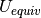

LoadCIF dialog.
Table of Contents
This algorithm loads a CIF file using the PyCifRW package and assigns a CrystalStructure to the sample of the workspace.
| Name | Direction | Type | Default | Description |
|---|---|---|---|---|
| Workspace | InOut | Workspace | Mandatory | Workspace into which the crystal structure is placed. |
| InputFile | Input | string | Mandatory | A CIF file containing a crystal structure. Allowed values: [‘cif’] |
| LoadUBMatrix | Input | boolean | False | Load UB-matrix from CIF file if available. |
This algorithm uses PyCifRW to parse the supplied CIF-file and extract the information necessary to construct a CrystalStructure object that is attached to the supplied workspace. For successfully loading a crystal structure, the CIF-file must contain some mandatory fields, describing the three components that define the structure.
Unit cell
For the unit cell, at least _cell_length_a must be present. If _cell_length_b or _cell_length_c are absent, the value is replaced with the one of _cell_length_a. Any absent item of _cell_angle_alpha, _cell_angle_beta or _cell_angle_gamma is replaced with 90.
Space group
The space group is currently loaded based on one of the fields _space_group_name_H-M_alt or _symmetry_space_group_name_H-M, where the former has precedence over the latter. The value has to correspond to one of the registered space groups in Mantid (see the corresponding concept page).
If neither of the fields is present, the loader tries to recover by using the space group number in either _symmetry_int_tables_number or _space_group_it_number where again, the former has precedence. This only works if there is only one setting registered for the specified space group type, because otherwise the algorithm can not decide which one to use.
Atoms
There needs to be a loop_ with at least the following fields: _atom_site_label, _atom_site_fract_x,
_atom_site_fract_y and _atom_site_fract_z. Additionally, _atom_site_type_symbol, _atom_site_occupancy and
_atom_site_U_iso_or_equiv and _atom_site_B_iso_or_equiv (internally converted to U by dividing by  are recognized. The labels are expected to contain the element symbol, any non-letter characters (numbers, special
characters) are removed. The _atom_site_label is only used for this purpose when _atom_site_type_symbol
is not present.
are recognized. The labels are expected to contain the element symbol, any non-letter characters (numbers, special
characters) are removed. The _atom_site_label is only used for this purpose when _atom_site_type_symbol
is not present.
The algorithm can also compute  from anisotropic ADPs [1] specified by the fields _atom_site_aniso_u_11,
_atom_site_aniso_u_12, _atom_site_aniso_u_13, _atom_site_aniso_u_22, _atom_site_aniso_u_23 and
_atom_site_aniso_u_33 (the  -based variant is recognized too, if both are present,
-based variant is recognized too, if both are present,  is used).
For this to work correctly, the field _atom_site_aniso_label has to be present and contain
the same strings as _atom_site_label. This calculation is only performed for atoms where the isotropic parameter is
missing or invalid. If neither isotropic nor anisotropic parameters are present for an atom, 0 is used.
is used).
For this to work correctly, the field _atom_site_aniso_label has to be present and contain
the same strings as _atom_site_label. This calculation is only performed for atoms where the isotropic parameter is
missing or invalid. If neither isotropic nor anisotropic parameters are present for an atom, 0 is used.
Optionally, a UB matrix can be loaded from the CIF-file and applied to the workspace via the SetUB-algorithm. For this, the _diffrn_orient_matrix_UB_xy fields have to be set.
| [1] | The equivalent isotropic displacement factor, R. X. Fischer & E. Tillmanns, Acta Crystallogr. C, vol. 44, p. 775, DOI: 10.1107/S0108270187012745 |
This algorithm requires python package PyCifRW, available at the python package index or through the operating system’s package manager. If the package is not present, this algorithm will not be available.
Note
To run these usage examples please first download the usage data, and add these to your path. In MantidPlot this is done using Manage User Directories.
The following script loads a CIF-file and prints the space group of the crystal structure:
sample_ws = CreateSampleWorkspace()
LoadCIF(sample_ws, 'LoadCIF_example_file.cif')
# Get the space group from the crystal structure that was loaded
crystal_structure = sample_ws.sample().getCrystalStructure()
print('Space group: {}'.format(crystal_structure.getSpaceGroup().getHMSymbol()))
The output is:
Space group: F d -3 m
Categories: AlgorithmIndex | Diffraction\DataHandling
Python: LoadCIF.py (last modified: 2018-10-05)
{kind=link}